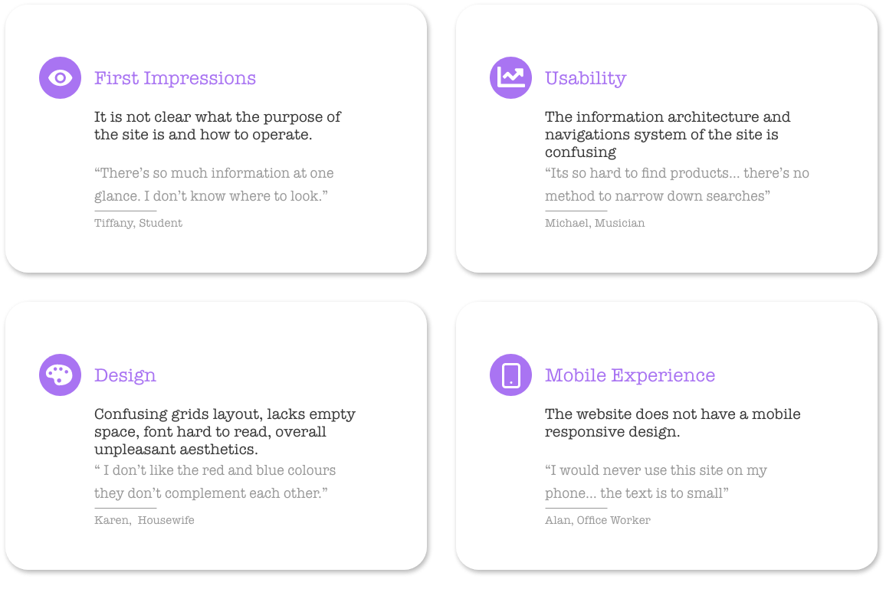
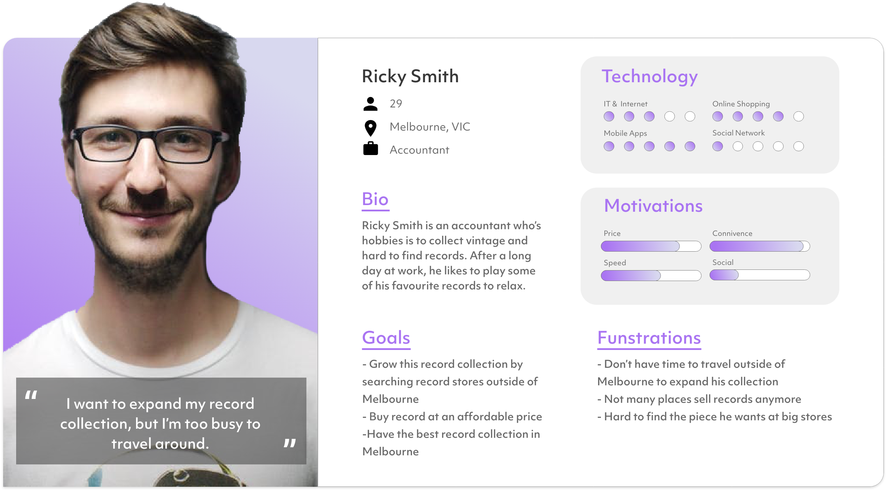

Redeye Records E-Commerce Redesign
Period
March - June 2020
My Role
User Research | Interaction | Visual design | Figma Prototyping | Testing
Overview
This is a design project I executed as a part of my studies at university. In this project, I was asked to pick an e-commerce site in our allocated field and redesign its user interface for both desktop and mobile versions. As my allocated field was vinyls and CD’s the ecommerce site I chose was Red Eye Records. Red Eye Records is Sydney’s largest independent music retailer with a fast-growing e-commerce platform with customers from all over the world seeking their rare, out of print and unique Australian vinyls and CD’s.
Design Process

Empathise
User reaserch
Interviews were conducted to better undertand the users impression of the current sites design, usability, first impression and mobile experience. Information learnt from this process provided me insights to improve the website.
define
Personas and User Journey Map

Ideate
User Flow Chart

Wireframe


Final Design
Home

Products Listing
Product Details
Add to Cart
Checkout
Reflection and takeaways
Reflection
This project pushed me in terms of learning how to use UI prototyping software (Figma) and new coding skills (HTML/CSS/JavaScript) in a short period. Although I believe my redesign is an improvement from the previous site, as the focus was on learning these new skills, time to research for user experience and improve the graphic design was left as a secondary priority. That being said, the project has plenty of aspects I am happy with. At the beginning of this project, I had barely used Figma before; however, at the end of this project, I can confidently say I can operate the program comfortably. This was a significant catalyst in further improving my skills in the program, which I believe is now at a high level. Additionally, learning basic HTML CSS and JavaScript helped me understand more about how front-end development operates and is created. Although there are improvements to be made to this redesign, this project helped me gain new skills and a clearer insight on user interface development.